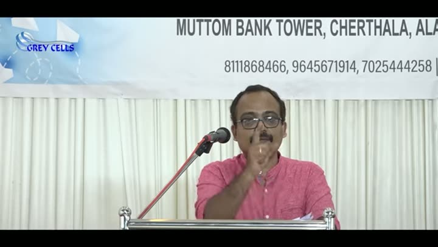
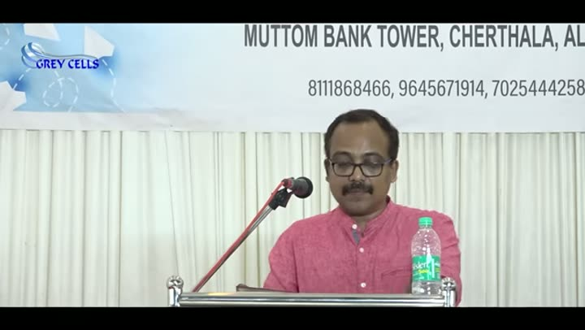
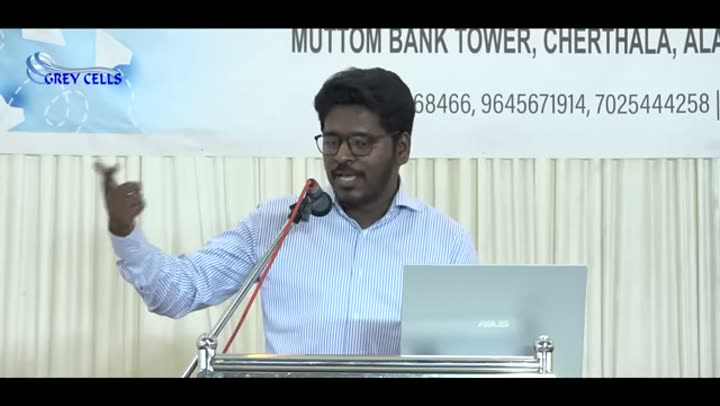
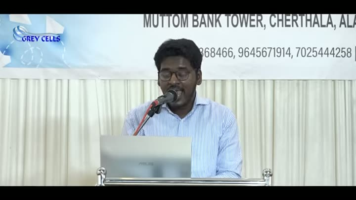
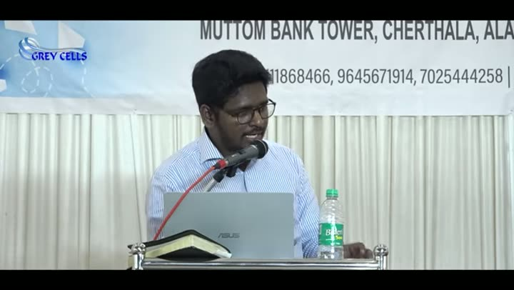

![Kaipps Cafe]()
Authored by Kaipp's AI Repo© 2026 Nishad Kaippally (Kaipps Cafe). All rights reserved.
This report was built with several private and public AI models. It is educational material: not for sale, and not to be reused or republished, including on any YouTube channel, without explicit permission.
ബൈബിളിലെ ദൈവം ഉണ്ടോ? Asher John vs Anup Isaac: ഡിബേറ്റ് വിശകലനം
Outgrow സംഘടിപ്പിച്ച ബിബ്ലിക്കൽ ഡിബേറ്റ്, 189 മിനിറ്റ്. Rationalist (യുക്തിവാദി) പക്ഷത്തുനിന്നുള്ള റിപ്പോർട്ട്. ശ്രദ്ധിക്കുക: record-ൽ "Speaker 1", "Speaker 2" എന്ന് കൊടുത്ത പേരുകൾ പലയിടത്തും തെറ്റാണ്. ഈ റിപ്പോർട്ടിൽ ഓരോ പോയിന്റും പറഞ്ഞ ഉള്ളടക്കം നോക്കിയാണ് ആരുടേതെന്ന് തീരുമാനിച്ചത്.

Anup Isaac (atheist): ബൈബിൾ തന്നെ ദൈവത്തിന് കൊടുക്കുന്ന ഗുണങ്ങൾ (സർവ്വശക്തൻ, കരുണാമയൻ, നീതിമാൻ, മാറ്റമില്ലാത്തവൻ) ബൈബിളിലെ കഥകളുമായി ഒത്തുപോകുന്നില്ല എന്ന് method of contradiction (വിരോധാഭാസ രീതി) വെച്ച് വാദിച്ചു.
Asher John (Christian apologist): Big Bang, ജൂതരുടെ അതിജീവനം, യേശുവിന്റെ ഉയിർപ്പ് എന്നീ മൂന്നിനും 'best explanation' (ഏറ്റവും നല്ല വിശദീകരണം) ബൈബിളിലെ ദൈവമാണെന്ന് പറഞ്ഞു. പിന്നീട് പ്രവചനവും hematidrosis (രക്തം വിയർക്കൽ) എന്ന 'medical evidence'-ഉം കൊണ്ടുവന്നു.
ബൈബിൾ വാക്യങ്ങളിൽ ഉറച്ചുനിന്ന Anup-ന്റെ പോയിന്റുകൾക്ക് Asher-ന് മറുപടി ഉണ്ടായില്ല: Matt 24:34 എന്ന പാളിയ പ്രവചനം, Jephthah, Numbers 31, Exodus 21:20-21-ലെ അടിമനിയമം. 'Context', 'topic അല്ല' എന്നൊക്കെ പറഞ്ഞ് Asher അവ ഒഴിവാക്കി.
Asher-ന്റെ ഒരു argument-ഉം ബൈബിളിലെ ആ പ്രത്യേക ദൈവത്തിൽ എത്തുന്നില്ല. ആധികാരിക വ്യക്തികളുടെ പേരുകളും നിരീശ്വരവാദികളെ ആക്ഷേപിക്കലും ആയിരുന്നു അദ്ദേഹത്തിന്റെ പ്രധാന ബലം.
ഉള്ളടക്കത്തിൽ Anup ആണ് മുന്നിൽ. പക്ഷേ Asher-ന്റെ മൂന്ന് arguments-ഉം അദ്ദേഹം നേരിട്ട് പൊളിച്ചില്ല. Polio, ഉയിർപ്പിന്റെ 'definition', Eucharist (കുർബാന) പോലുള്ളിടത്ത് സ്വന്തം വീഴ്ചകളും വന്നു. അതുകൊണ്ട് knockout (നിർണായക വിജയം) നഷ്ടമായി.
Anup Isaac-ന്റെ ഏറ്റവും ശക്തമായ പോയിന്റുകൾ
ബൈബിൾ വാക്യങ്ങൾ മാത്രം ആധാരമാക്കിയ പോയിന്റുകൾ. ഇവയ്ക്ക് Asher-ന് തൃപ്തികരമായ മറുപടി ഉണ്ടായിരുന്നില്ല.
"ഈ തലമുറ കടന്നുപോകില്ല": പാളിയ പ്രവചനം

Matt 24:34-ൽ ലോകാവസാനം 'ഈ തലമുറ' തന്നെ കാണും എന്ന് യേശു പറയുന്നു. അത് നടന്നില്ല. Asher ദേവാലയനാശ പ്രവചനം (
02:01:17) വിജയമായി എണ്ണി. അപ്പോൾ Anup ചൂണ്ടിക്കാട്ടി: ദൈവത്തിന്റെ കാര്യത്തിൽ ഒരു പ്രവചനം പോലും പാളാൻ പാടില്ല. ശരിയായവ എണ്ണുകയും പാളിയവ മറക്കുകയും ചെയ്യുന്നത് cherry-picking (ഇഷ്ടമുള്ളത് മാത്രം തിരഞ്ഞെടുക്കൽ) ആണ്. Closing-ൽ പോലും Asher ഇതിന് മറുപടി പറഞ്ഞില്ല. കൂടാതെ Mark എഴുതിയത് ഏകദേശം AD 70-നോട് അടുത്താണ് എന്നാണ് ഭൂരിപക്ഷം scholars-ന്റെയും നിലപാട്. അതായത് ദേവാലയനാശ 'പ്രവചനം' സംഭവം കഴിഞ്ഞ ശേഷം എഴുതിയതാകാം.
Jephthah: കർത്താവിന്റെ ആത്മാവ് വന്നവന്റെ നരബലി

Judges 11:29 പ്രകാരം കർത്താവിന്റെ ആത്മാവ് Jephthah-യുടെ മേൽ വന്ന ശേഷമാണ് അദ്ദേഹം നരബലി നേരുന്നത്. ദൈവം വിജയം കൊടുക്കുന്നു, മകൾ ബലിയാകുന്നു. 'ബൈബിൾ അത് endorse (അംഗീകരിക്കുക) ചെയ്യുന്നില്ല' എന്നായിരുന്നു Asher-ന്റെ മറുപടി (
01:40:16). പിന്നീട് Lev 18:21 കാണിച്ച് ബൈബിൾ child sacrifice (കുട്ടികളെ ബലി കൊടുക്കൽ) വിലക്കുന്നുണ്ടെന്ന് പറഞ്ഞു (
01:58:12). ഇത് Anup-ന്റെ വാദത്തെ കൂടുതൽ ശക്തമാക്കുന്നു. സ്വന്തം നിയമം തെറ്റിക്കുന്ന നേർച്ചയ്ക്ക് ദൈവം വിജയം കൊടുത്തു. Abraham-ന്റെ കത്തി തടഞ്ഞ ദൈവം ഇവിടെ തടഞ്ഞതുമില്ല.
Numbers 31: ആൺകുഞ്ഞുങ്ങളെ കൊല്ലുക, കന്യകകളെ എടുക്കുക
Midian സ്ത്രീകൾ Peor സംഭവത്തിൽ പാപം ചെയ്യിച്ചു എന്ന് Asher ന്യായീകരിച്ചു (
01:00:00). പക്ഷേ Numbers 31:17-18 ആവശ്യപ്പെടുന്നത് എല്ലാ ആൺകുട്ടികളെയും കൊല്ലാനും കന്യകകളെ 'നിങ്ങൾക്കായി' സൂക്ഷിക്കാനുമാണ്. ആ കുഞ്ഞുങ്ങൾ എന്ത് തെറ്റ് ചെയ്തു എന്ന ചോദ്യത്തിന് മറുപടി ഉണ്ടായില്ല. 'മറുപടി കൊടുത്തു' എന്ന Asher-ന്റെ പിന്നീടുള്ള അവകാശവാദം (
01:58:44) record-മായി ഒത്തുപോകുന്നില്ല.
Exodus 21:20-21: "അടിമ അവന്റെ സ്വത്താണ്"
അടി കിട്ടിയ അടിമ രണ്ടുമൂന്നു ദിവസം ജീവിച്ചിരുന്നാൽ യജമാനന് ശിക്ഷയില്ല. കാരണം 'അടിമ അവന്റെ സ്വത്ത്'. Asher closing-ൽ ഇത് തൊട്ടുപോലുമില്ല. Genesis 1-ൽ നിന്നാണ് മനുഷ്യാവകാശം വന്നത് എന്ന് Asher പിന്നീട് പറഞ്ഞു (
02:46:31). പക്ഷേ ആ Torah തന്നെ അടിമത്തത്തെ നിയന്ത്രിക്കുകയാണ്, നിർത്തലാക്കുകയല്ല. ഒരു വശത്ത് 'ദൈവസാദൃശ്യം', മറുവശത്ത് മനുഷ്യൻ സ്വത്ത്. ഇത് രണ്ടും ഒരേ പുസ്തകത്തിൽ ഒരുമിച്ച് നിൽക്കില്ല.
1 Tim 2 / 1 Cor 14: സ്ത്രീ മൗനമായിരിക്കട്ടെ
Ephesus-ലെ Artemis ക്ഷേത്രത്തിൽ നിന്ന് വന്ന സ്ത്രീകൾക്കുള്ള പ്രാദേശിക നിർദ്ദേശം മാത്രമാണിത് എന്നായിരുന്നു Asher-ന്റെ വിശദീകരണം (
01:59:24). എന്നാൽ text തന്നെ കൊടുക്കുന്ന കാരണം 'ആദ്യം സൃഷ്ടിക്കപ്പെട്ടത് ആദം', 'വഞ്ചിക്കപ്പെട്ടത് സ്ത്രീ' എന്നതാണ്. അതൊരു സൃഷ്ടി-ക്രമ ന്യായമാണ്, പ്രാദേശികമല്ല. 1 Cor 14:34 'വിശുദ്ധരുടെ എല്ലാ സഭകളിലും' എന്ന് പറയുന്നു. Context വായിക്കാൻ Anup തിരിച്ചു വെല്ലുവിളിച്ചു (
02:06:46), അത് ശരിയായ നീക്കമായിരുന്നു. '2000 വർഷമായി സഭ തെറ്റിയോ' (
01:59:04) എന്നത് appeal to tradition (പാരമ്പര്യത്തോടുള്ള അപ്പീൽ) ആണ്. പല സഭകളും ഇന്നും സ്ത്രീകൾക്ക് പൗരോഹിത്യം നിഷേധിക്കുന്നുമുണ്ട്.
ക്ഷാമത്തിലെ കുഞ്ഞിനെ തിന്നൽ, Govindachamy: problem of evil
2 Kings 6:25-29-ലെ ക്ഷാമത്തിൽ അമ്മമാർ കുഞ്ഞിനെ വേവിച്ച് തിന്നുന്നു. ഒരു കിണ്ണം കഞ്ഞി കൊടുക്കാമായിരുന്ന സർവ്വശക്തൻ അത് ചെയ്യുന്നില്ല. 'ഒന്നുകിൽ ശക്തനും ക്രൂരനും, അല്ലെങ്കിൽ ശക്തിയില്ലാത്ത കരുണാമയൻ' എന്ന Anup-ന്റെ formulation (രൂപീകരണം) ആയിരുന്നു ഡിബേറ്റിലെ ഏറ്റവും വ്യക്തമായ വാചകം. Govindachamy ഉദാഹരണവും (
00:50:42) ഇതുതന്നെ. Asher problem of evil (തിന്മയുടെ പ്രശ്നം) ഒരിക്കലും നേരിട്ട് നേരിട്ടില്ല. COVID ചോദ്യത്തിന് 'മനുഷ്യന്റെ വീഴ്ചയുടെ ഫലം' എന്ന മറുപടി മാത്രം (
02:34:05). ഏത് ദുരിതത്തെയും ഒരുപോലെ 'വിശദീകരിക്കുന്ന' ഈ മറുപടി unfalsifiable (തെറ്റാണെന്ന് തെളിയിക്കാൻ പറ്റാത്തത്) ആണ്.
Matt 5:17-18 vs "മോശയുടെ നിയമം perfect അല്ലായിരുന്നു"
'ദൈവം perfect (പൂർണ്ണൻ), പക്ഷേ ദൈവം കൊടുത്ത നിയമം perfect അല്ല' എന്ന് Asher പറഞ്ഞു (
02:45:16). ഇത് special pleading (തനിക്കായി മാത്രം ഇളവ് ചോദിക്കൽ) ആണ്. ആകാശവും ഭൂമിയും ഒഴിയുംവരെ നിയമത്തിൽ നിന്ന് ഒരു വള്ളിയും പുള്ളിയും മാറില്ല എന്ന യേശുവിന്റെ വാക്കാണ് Anup മറുപടിയായി കാണിച്ചത്. Psalm 19:7 ('കർത്താവിന്റെ നിയമം പൂർണ്ണം') കൂടി ചേർത്തിരുന്നെങ്കിൽ ഈ വൈരുദ്ധ്യം പൂർത്തിയായേനെ.
Asher John-ന്റെ arguments: എവിടെ പൊളിയുന്നു
എല്ലാം 'best explanation' ഫോർമാറ്റിൽ. പക്ഷേ ഒന്നും ബൈബിളിലെ ആ പ്രത്യേക ദൈവത്തിൽ എത്തുന്നില്ല. ഓരോന്നിന്റെയും ഏറ്റവും ശക്തമായ രൂപം ആദ്യം, പിന്നെ അതിന്റെ ദൗർബല്യം.
Big Bang: "തുടക്കം" എന്നാൽ "Genesis-ലെ ദൈവം" എന്നല്ല

Steelman (ഏറ്റവും ശക്തമായ രൂപം): പ്രപഞ്ചത്തിന് ഒരു തുടക്കമുണ്ട്, Genesis-ഉം ഒരു തുടക്കം പറയുന്നു. പക്ഷേ ഒരു തുടക്കത്തിൽ നിന്ന് ഒരു സ്രഷ്ടാവിലേക്ക് എത്താനാവില്ല. എത്തിയാൽ തന്നെ കിട്ടുന്നത് deism (ഇടപെടാത്ത സ്രഷ്ടാവ്) ആണ്, Yahweh അല്ല. Genesis-ലെ ക്രമം (സൂര്യനു മുമ്പേ ഭൂമി, ആറു ദിവസം) Big Bang-ന് നേർ വിരുദ്ധമാണ്. Anup
00:08:08-ൽ ഇത് പറഞ്ഞിട്ടും Asher മറുപടി പറഞ്ഞില്ല. 'പഴയ മതങ്ങളെല്ലാം നിത്യപ്രപഞ്ചം പറഞ്ഞു, Genesis മാത്രം വിപ്ലവകരം' (
00:25:39) എന്നതും തെറ്റാണ്. Enuma Elish, ഈജിപ്ഷ്യൻ സൃഷ്ടിപുരാണങ്ങൾ, ഹിന്ദു സൃഷ്ടികഥകൾ എല്ലാം 'തുടക്കം' പറയുന്നവയാണ്. Genesis 1:2-ൽ തന്നെ വെള്ളം മുമ്പേ ഉണ്ട്.
Lemaître-ന്റെ "fiat lux" കഥ
Genesis-ലെ 'വെളിച്ചം ഉണ്ടാകട്ടെ' ആണ് Lemaître-നെ Big Bang-ൽ എത്തിച്ചത് എന്നതിന് Asher ഒരു source-ഉം കൊടുത്തില്ല. ശാസ്ത്രവും വിശ്വാസവും വേറെ വേറെയാണ് എന്ന് പരസ്യമായി പറഞ്ഞയാളാണ് Lemaître. 1951-ൽ Pius XII Big Bang-നെ സൃഷ്ടിയുടെ തെളിവാക്കിയപ്പോൾ Lemaître അതിനെ എതിർത്തു എന്നത് രേഖപ്പെട്ട ചരിത്രമാണ്. Big Bang തെളിഞ്ഞത് CMB (cosmic microwave background, പ്രപഞ്ച പശ്ചാത്തല വികിരണം) പോലുള്ള data കൊണ്ടാണ്. ആരുടെ വിശ്വാസം എന്തായിരുന്നു എന്നതുകൊണ്ടല്ല.
ജൂത അതിജീവന argument: എന്ത് നടന്നാലും "ദൈവം"
Steelman: ഒരു ചെറിയ ജനത 2000 വർഷത്തെ പീഡനം അതിജീവിച്ച് അസാധാരണ നേട്ടങ്ങൾ ഉണ്ടാക്കി. പക്ഷേ ഇവിടെ പീഡനവും 'പ്രവചനം', അതിജീവനവും 'പ്രവചനം', വിജയവും 'അനുഗ്രഹം'. ഒരു ഫലവും ഈ വാദത്തിന് എതിരാകുന്നില്ല. അതുകൊണ്ട് ഇത് തെളിവല്ല. Hittites നശിച്ചുപോയി എന്ന് Asher തന്നെ സമ്മതിക്കുന്നു (
02:36:20). അതിജീവിച്ചവരെ മാത്രം എണ്ണുന്നത് survivorship bias (അതിജീവിച്ചവരെ മാത്രം കാണുന്ന പിഴവ്) ആണ്. Armenians, Parsis തുടങ്ങിയ ചിതറിക്കപ്പെട്ട മറ്റു ജനതകളും അതിജീവിച്ചിട്ടുണ്ട്. 'Natural explanation-നെ വെല്ലുന്നു' (
00:36:29) എന്നത് god of the gaps (അറിവിന്റെ വിടവിൽ ദൈവത്തെ വെക്കൽ) ആണ്. ഏകദേശം 60 ലക്ഷം പേർ കൊല്ലപ്പെട്ട Holocaust (
02:20:36) ദൈവത്തിന്റെ സംരക്ഷണത്തിന്റെ തെളിവാണോ? Deut 28 പ്രകാരം പീഡനം തന്നെ ദൈവത്തിന്റെ ശിക്ഷയാണ്.
ഉയിർപ്പിന്റെ "minimal facts": അവകാശവാദങ്ങളാണ്, ഉയിർപ്പല്ല
Steelman: ഒഴിഞ്ഞ കല്ലറ, ദർശനങ്ങൾ, ശിഷ്യരുടെ ഉറപ്പ്, Paul-ന്റെയും James-ന്റെയും മാനസാന്തരം, സഭയുടെ വളർച്ച. പക്ഷേ ഇവയെല്ലാം രേഖകളിലെ അവകാശവാദങ്ങളാണ്. Asher ഉദ്ധരിച്ച Gerd Lüdemann (
01:23:46) അതേ ദർശനങ്ങൾ hallucinations (മതിഭ്രമങ്ങൾ) ആയിരുന്നു എന്നാണ് നിഗമനം ചെയ്തത്. അദ്ദേഹത്തിന്റെ നിഗമനം മറച്ച് quote മാത്രം എടുക്കുന്നത് quote-mining ആണ്. Bartholomew-ന്റെ രക്തസാക്ഷിത്വ കഥ (
01:03:48) പിൽക്കാല ഐതിഹ്യമാണ്, ചരിത്രമല്ല. ആത്മാർത്ഥതയോടെ തെറ്റായ വിശ്വാസത്തിനുവേണ്ടി മരിച്ചവർ എല്ലാ മതങ്ങളിലുമുണ്ട്. Rodney Stark-ന്റെ 40% വളർച്ച (
00:40:27) Stark തന്നെ Mormon വളർച്ചയുമായി താരതമ്യം ചെയ്തിട്ടുണ്ട്. വളർച്ച സത്യത്തിന്റെ തെളിവാണെങ്കിൽ Mormonism-ഉം സത്യമാകണം.
സ്ത്രീ സാക്ഷികളും N. T. Wright-ന്റെ "നിഷ്പക്ഷത"യും
Criterion of embarrassment (നാണക്കേടുണ്ടാക്കുന്ന വിവരം ചരിത്രപരമാകാൻ സാധ്യതയുണ്ട് എന്ന നിയമം) പരമാവധി കാണിക്കുന്നത് കഥ പഴയതാണെന്നാണ്. Miracle (അത്ഭുതം) നടന്നു എന്നല്ല. 1 Cor 15-ലെ പട്ടികയിൽ സ്ത്രീകളില്ല എന്ന് Asher തന്നെ സമ്മതിച്ചു (
00:41:43). Wright-നെ 'Oxford-ലെ classics professor' ആയി അവതരിപ്പിച്ചു. യഥാർത്ഥത്തിൽ Wright ഒരു New Testament scholar-ഉം Durham-ലെ മുൻ Anglican bishop-ഉം ആണ്. ഒരു ക്രൈസ്തവ apologist-നെ നിഷ്പക്ഷ ചരിത്രകാരനായി കാണിക്കുന്നതാണ് ഇവിടത്തെ പ്രശ്നം.
Hematidrosis: "medical evidence" അല്ല

Asher പറഞ്ഞ reference Luke 12:44 ആണ് (
02:02:33). ശരിയായ വാക്യം Luke 22:44. അവിടെ പറയുന്നത് 'രക്തത്തുള്ളികൾ പോലെ' എന്ന ഉപമയാണ്. 22:43-44 വാക്യങ്ങൾ ഏറ്റവും പഴയ manuscripts-ൽ (P75, Vaticanus) ഇല്ല. Indian Journal of Dermatology-ലെ ലേഖനം യേശുവിനെ ഉദാഹരണമായി എടുക്കുന്നത് ബൈബിളിനെ ആധാരമാക്കിയാണ്. അതൊരു സ്ഥിരീകരണമല്ല. കടുത്ത ഭയം ആർക്കും വരാം, അതിന് ഭാവി അറിയേണ്ടതില്ല. ഭയം ഭാവിജ്ഞാനത്തിന്റെ തെളിവാകുന്നുമില്ല. Luke ഒരു വൈദ്യനായിരുന്നു എന്നത് പാരമ്പര്യം മാത്രമാണ്.
Isaiah 53 "കൃത്യമായ" പ്രവചനം
Isaiah 53-ൽ ക്രൂശോ റോമാക്കാരോ ഇല്ല. ജൂത വായനയിൽ ഈ 'ദാസൻ' ഇസ്രായേൽ ആണ്. Isaiah അറിയാമായിരുന്ന സുവിശേഷകർ അതിനനുസരിച്ച് കഥ രൂപപ്പെടുത്തിയിരിക്കാം. '19-ാം നൂറ്റാണ്ടിലെ നിരീശ്വര ചരിത്രകാരന്മാർ ഇത് AD-യിൽ എഴുതിയതാണെന്ന് പറഞ്ഞു' (
02:05:20) എന്നത് strawman (എതിരാളി പറയാത്തത് ആരോപിക്കൽ) ആണ്. Critical scholars Isaiah 40-55 BCE 6-ാം നൂറ്റാണ്ടിലേക്കാണ് date ചെയ്തത്. Dead Sea Scrolls തെളിയിക്കുന്നത് text പഴയതാണെന്നു മാത്രമാണ്. അത് യേശുവിനെ പ്രവചിച്ചു എന്നല്ല.
ഒഴിഞ്ഞുമാറ്റങ്ങളും fallacies-ഉം: Asher John
Argument-നു പകരം rhetoric (വാചാടോപം) വന്ന നിമിഷങ്ങൾ.
"Topic ontological ആണ്, morality അല്ല"
ഡിബേറ്റിന്റെ പേര് തന്നെ 'Biblical debate' ആണ്. ബൈബിൾ ദൈവത്തെ 'കരുണാമയൻ, നീതിമാൻ' എന്നൊക്കെ നിർവചിക്കുന്നു. ആ നിർവചനം ബൈബിൾ തന്നെ തെറ്റിക്കുന്നെങ്കിൽ, നിർവചിക്കപ്പെട്ട ആ ദൈവം നിലനിൽക്കില്ല. Hitler ഉദാഹരണം ഇവിടെ ചേരില്ല. Hitler ആരും 'പൂർണ്ണമായും നല്ലവൻ' എന്ന് നിർവചിച്ച ആളല്ല. ദൈവത്തെ അങ്ങനെയാണ് നിർവചിക്കുന്നത്. ഇതേ രീതിയിൽ Anup നൽകിയ മറുപടി (
01:05:19) ശരിയായിരുന്നു.
"ഉയിർപ്പിനെപ്പറ്റി ഒരു നാസ്തികനും debate-ന് വരില്ല"
Bart Ehrman, Gerd Lüdemann, Richard Carrier എന്നിവർ ഉയിർപ്പിനെക്കുറിച്ച് പരസ്യമായി debate ചെയ്തിട്ടുണ്ട്. ഇതിനെതിരെ ഒരു സംഭവം കാണിച്ചാൽ മതി. ഇനി ആരെങ്കിലും വരാതിരുന്നാലും അത് ഉയിർപ്പിന്റെ തെളിവാകില്ല. 'ഈ debate നടന്നാൽ atheism expose ആകും' (
01:24:47) എന്നത് തെളിവില്ലാത്ത വീമ്പാണ്.
"Intellectual bankruptcy", "cult", Ravichandran
'നവനാസ്തികർ അന്ധവിശ്വാസികൾ' (
00:58:18), 'intellectual bankruptcy' (
01:56:00), 'നവനാസ്തികത cult ആണ്' (
02:42:15) എന്നൊക്കെ Asher പറഞ്ഞു. വേദിയിൽ ഇല്ലാത്ത Ravichandran-നെയും ആക്രമിച്ചു. ഇതെല്ലാം poisoning the well (എതിരാളിയെ മുൻകൂട്ടി താറടിക്കൽ) ആണ്. യേശുവിന്റെ ചരിത്രപരത Anup നിഷേധിച്ചതേയില്ല (
01:06:45). അതുകൊണ്ട് mythicism (യേശു ജീവിച്ചിരുന്നില്ല എന്ന വാദം) ആക്രമിച്ചത് മുഴുവൻ red herring (ശ്രദ്ധ തിരിക്കൽ) ആയിരുന്നു.
Fallacy-യെ നിർവചിക്കുന്നു, എന്നിട്ട് അതുതന്നെ ചെയ്യുന്നു
സ്വന്തം മേഖലയിലെ വിദഗ്ധരെ ഉദ്ധരിക്കുന്നത് fallacy അല്ല എന്ന് Asher വിശദീകരിച്ചു. ആ കാര്യം ശരിയാണ്, അത് സമ്മതിക്കാം. പക്ഷേ അദ്ദേഹം തന്നെ ദൈവത്തെക്കുറിച്ചും ചരിത്രത്തെക്കുറിച്ചും ഉദ്ധരിച്ചത് Pascal, Mark Twain (
02:21:01), Jordan Peterson (
00:36:13), Penzias എന്നിവരെയാണ്. ഈ വിഷയങ്ങളിൽ ഇവർ ആരും വിദഗ്ധരല്ല. ഇനി യഥാർത്ഥ വിദഗ്ധർ തന്നെയാണെങ്കിലും പറഞ്ഞത് 'compatible' (ഒത്തുപോകുന്നത്) എന്നു മാത്രമാണ് (
01:18:06). ഒത്തുപോകുന്നു എന്നത് തെളിവല്ല. Carrier 'blogger മാത്രം' എന്നതും (
01:37:12) ഭാഗികമായി തെറ്റാണ്. Columbia-യിൽ നിന്ന് പ്രാചീന ചരിത്രത്തിൽ PhD ഉള്ളയാളാണ് Carrier.
Virgin birth: "ദൈവത്തിന് de novo സൃഷ്ടിക്കാം"
ദൈവം ഉണ്ടോ എന്നാണ് debate. 'ദൈവമുണ്ടെങ്കിൽ ദൈവത്തിന് ചെയ്യാം' എന്നത് തെളിയിക്കേണ്ട കാര്യം ആദ്യമേ ഊഹിക്കലാണ്, അതായത് circular reasoning (ചാക്രിക യുക്തി). അസാധാരണമായ അവകാശവാദത്തിന്റെ burden of proof (തെളിയിക്കാനുള്ള ബാധ്യത) അത് ഉന്നയിക്കുന്നയാളിനാണ്.
"Bayesian" probability-യും fine-tuning-ഉം
'ദൈവം ഉണ്ടെങ്കിൽ ഈ data കിട്ടാനുള്ള probability ഉയർന്നതാണ്' എന്ന് Asher പറഞ്ഞു. ഒരു കണക്കും കാണിച്ചില്ല. ഏത് ഫലവും 'വിശദീകരിക്കുന്ന' ഒരു hypothesis (അനുമാനം) ഒന്നും പ്രവചിക്കുന്നില്ല. ജൂത ചരിത്രത്തിൽ നിന്ന് cosmological constant-ലേക്ക് (
02:36:54) ചാടിയത് പ്രശ്നം മാറ്റാനുള്ള ശ്രമമായിരുന്നു.
Asher John-ന്റെ factual errors (വസ്തുതാപരമായ തെറ്റുകൾ)
Public record വെച്ച് പരിശോധിക്കാവുന്ന പിഴവുകൾ.
Copernicus-നെ സഭ പീഡിപ്പിച്ചു? ഇല്ല

Copernicus 1543-ൽ മരിച്ചു. അദ്ദേഹത്തിന്റെ പുസ്തകം Pope Paul III-ന് സമർപ്പിച്ചതായിരുന്നു. ഒരു വിചാരണയും നടന്നിട്ടില്ല. 1633-ൽ Galileo-യെ 'vehemently suspect of heresy' (ശക്തമായ heresy സംശയം) എന്ന് വിധിച്ചത് heliocentrism (സൂര്യകേന്ദ്രവാദം) എന്ന ശാസ്ത്രീയ നിലപാടിന്റെ പേരിലാണ്. അതുകൊണ്ട് 'theological ആണ്, scientific അല്ല' എന്ന വേർതിരിവ് ഇവിടെ നിലനിൽക്കില്ല. ഒരു ശാസ്ത്രീയ നിലപാടിനെയാണ് heresy ആയി പ്രഖ്യാപിച്ചത്. Ronald Numbers-ന്റെ പുസ്തകം പ്രസിദ്ധീകരിച്ചത് Harvard University Press ആണ്. ആ പുസ്തകം പൊളിക്കുന്ന 'myth' Galileo-യെ ജയിലിലിട്ടു എന്നതാണ്. സഭ അദ്ദേഹത്തെ ശിക്ഷിച്ചിട്ടേയില്ല എന്നല്ല.
Tiberius-നെപ്പറ്റി ആദ്യ രേഖ 100 വർഷം കഴിഞ്ഞ് Tacitus?
തെറ്റ്. Velleius Paterculus Tiberius-ന്റെ കാലത്തുതന്നെ (ഏകദേശം AD 30) എഴുതിയിട്ടുണ്ട്. Philo-യുടെ എഴുത്തുകളും നാണയങ്ങളും inscriptions-ഉം (ശിലാലിഖിതങ്ങൾ) വേറെയുമുണ്ട്. യേശുവിനെ ഒരു ചക്രവർത്തിയോട് താരതമ്യം ചെയ്യാൻ കൊണ്ടുവന്ന ഈ ഉദാഹരണം തന്നെ തെറ്റായിരുന്നു. യേശു ജീവിച്ചിരുന്നു എന്ന scholarly consensus (പണ്ഡിതസമ്മതം) ശരിയാണ്. പക്ഷേ അത് ഉയിർപ്പിന്റെ തെളിവല്ല.
സുവിശേഷങ്ങൾ AD 40-ൽ? "UN പോലും ശ്രമിച്ചു"?
Mark-ന്റെ തീയതി AD 66-നും 70-നും ഇടയിലോ അതിനു ശേഷമോ ആണ് എന്നാണ് mainstream (മുഖ്യധാര) scholarship. ബാക്കി സുവിശേഷങ്ങൾ അതിനും ശേഷമാണ്. ദേവാലയം പുനർനിർമ്മിക്കാൻ UN ശ്രമിച്ചു എന്നതിന് (
02:01:42) ഒരു രേഖയുമില്ല.
Sennacherib: "ചരിത്രകാരന്മാർക്ക് വിശദീകരിക്കാനാവാത്ത അത്ഭുതം"
Sennacherib-ന്റെ Prism പറയുന്നത് Hezekiah-യെ 'കൂട്ടിലെ പക്ഷിയെപ്പോലെ' അടച്ചു, കനത്ത കപ്പം വാങ്ങി എന്നാണ്. 2 Kings 18:14-16-ഉം കപ്പം കൊടുത്തത് സമ്മതിക്കുന്നു. Herodotus-ന്റെ കഥ ഈജിപ്തിലെ ഒരു സൈന്യത്തിന്റെ വില്ലുകൾ എലികൾ കരണ്ടതിനെക്കുറിച്ചാണ്, Jerusalem-നെക്കുറിച്ചല്ല. 'ശമുവേലിന്റെ പുസ്തകം' (
02:32:05) എന്ന reference-ഉം തെറ്റാണ്. ശരിയായത് Kings/Isaiah. ഒരു പകർച്ചവ്യാധിക്ക് സ്വാഭാവിക വിശദീകരണമുണ്ട്. 'ദൂതൻ' എന്നത് അതിനു മുകളിൽ ചേർത്തതാണ്.
Peor സംഭവത്തിൽ Molech-നുള്ള child sacrifice?
Numbers 25-ൽ പറയുന്നത് Baal of Peor ആരാധനയും ലൈംഗികതയുമാണ്. Molech-നുള്ള കുഞ്ഞുബലി അവിടെ ഇല്ല. Numbers 31-നെ ന്യായീകരിക്കാൻ Asher text-ലേക്ക് ചേർത്തതാണ് അത്.
മനുഷ്യാവകാശം Genesis 1-ൽ നിന്നോ?
UDHR (Universal Declaration of Human Rights, സാർവത്രിക മനുഷ്യാവകാശ പ്രഖ്യാപനം) തയ്യാറാക്കിയവർ ദൈവത്തെക്കുറിച്ചുള്ള പരാമർശം മനഃപൂർവം ഒഴിവാക്കി. Article 1 secular (മതനിരപേക്ഷം) ആണ്. പല സംസ്കാരങ്ങളിൽ നിന്നുള്ള പ്രതിനിധികൾ ചേർന്ന് എഴുതിയ രേഖയാണ് അത്. ഇതേ Torah അടിമത്തം അനുവദിക്കുന്നുമുണ്ട് (
02:15:00).
Anup Isaac-ന്റെ വീഴ്ചകൾ: rationalist case എങ്ങനെ വാദിക്കണമായിരുന്നു
അടുത്ത debate ജയിക്കാൻ തിരുത്തേണ്ടവ. ഇവിടെയാണ് വ്യക്തമായ വിജയം നഷ്ടമായത്.
Asher-ന്റെ മൂന്ന് arguments-ഉം നേരിട്ട് പൊളിച്ചില്ല
ജൂത argument-ൽ 'അദ്ദേഹത്തോട് ഞാൻ യോജിക്കുന്നു' എന്ന് Anup പറഞ്ഞു. ഉയിർപ്പ് 'topic അല്ല' എന്നും പറഞ്ഞു (
01:25:23). ഇതാണ് Asher-ന് 'not even touched' (
01:56:18) എന്ന ആയുധം കൊടുത്തത്. ഈ debate-ലെ ഏറ്റവും വലിയ ഒഴിവാക്കൽ ഇതായിരുന്നു. പറയേണ്ടിയിരുന്നത്: തുടക്കം എന്നാൽ സ്രഷ്ടാവ് എന്നല്ല, Genesis-ലെ ക്രമം Big Bang-ന് എതിരാണ്. എന്ത് നടന്നാലും ശരിയാകുന്ന ജൂത പ്രവചനം തെളിവല്ല, Holocaust എങ്ങനെ സംരക്ഷണമാകും? ഉയിർപ്പിന് ഉള്ളത് പതിറ്റാണ്ടുകൾ കഴിഞ്ഞ് എഴുതിയ രേഖകൾ മാത്രമാണ്, burden of proof Asher-നാണ്.
Polio "ജന്മനാ" ഉള്ളതോ? Vaccine 200-300 വർഷം മുമ്പോ?
Polio poliovirus എന്ന വൈറസ് കൊണ്ടുണ്ടാകുന്ന infection ആണ്. ജന്മനാ ഉള്ള വൈകല്യമല്ല. Salk vaccine വന്നത് 1955-ലാണ്, 200-300 വർഷം മുമ്പല്ല (
03:03:08). Problem of evil-ന്റെ ശരിയായ രൂപം ഇതായിരുന്നു: ദൈവം എന്തിന് poliovirus സൃഷ്ടിച്ചു? എന്തിന് രണ്ടു ലക്ഷം വർഷം മനുഷ്യനെ അതിന് വിട്ടുകൊടുത്തു?
ഉയിർപ്പ് "definition അനുസരിച്ച്" അസാധ്യം എന്ന വാദം
'മരിച്ചയാൾക്ക് സ്വയം ഉയിർക്കാനാവില്ല' എന്ന വാദം ക്രൈസ്തവ അവകാശവാദത്തെ നേരിടുന്നില്ല. Father ആണ് ഉയിർപ്പിച്ചത് എന്നാണ് അവരുടെ നിലപാട് (Acts 2:24). Trinity-യിൽ 'ഒന്ന്' എന്നത് ഒരേ വ്യക്തി എന്ന അർത്ഥത്തിലല്ല. John 10:30 കൊണ്ട് ഇത് തീരില്ല (
03:04:21). ശക്തമായ വാദം ഇതായിരുന്നു: അസാധാരണമായ അവകാശവാദത്തിന് അസാധാരണമായ തെളിവ് വേണം. സുവിശേഷങ്ങൾ തന്നെ കല്ലറയിൽ ആര് പോയി, എത്ര ദൂതന്മാർ എന്ന കാര്യത്തിൽ പരസ്പരം വിരുദ്ധമാണ്.
Eucharist cannibalism, "ക്രിസ്ത്യാനിക്ക് മനുഷ്യത്വം കിട്ടില്ല"
'ഞാൻ ആശയത്തെയാണ് വിമർശിക്കുന്നത്' എന്ന് പറഞ്ഞിട്ടും 'ഒരു ക്രിസ്ത്യാനിക്ക് മനുഷ്യത്വം കിട്ടുമെന്ന് തോന്നുന്നില്ല' എന്ന് Anup പറഞ്ഞു. ഇത് ആളുകളെ നേരിട്ട് ആക്രമിക്കലാണ്. സദസ്സിനെ അകറ്റുന്നതുമാണ്. Asher അത് 'ലോകത്തിന്റെ സമത്വം' എന്ന narrative-ലേക്ക് (
01:16:05) തിരിച്ചു. ഒരൊറ്റ വാചകത്തിൽ പറഞ്ഞിരുന്നെങ്കിൽ പോയിന്റ് നിലനിന്നേനെ: transubstantiation (അപ്പം യഥാർത്ഥത്തിൽ മാംസമാകുന്നു എന്ന സിദ്ധാന്തം) അക്ഷരാർത്ഥത്തിൽ എടുത്താൽ ചോദ്യം ഉയരുന്നു. പിന്നെ അടുത്ത പോയിന്റിലേക്ക് പോകണമായിരുന്നു.
Deut 32:4 "തിന്മ അറിയാത്തവൻ", ഇരുമ്പുരഥം
Deut 32:4-ന്റെ അർത്ഥം 'അനീതി ചെയ്യാത്തവൻ' എന്നാണ്. തിന്മയെക്കുറിച്ച് അറിവില്ലാത്തവൻ എന്നല്ല. അതുകൊണ്ട് സർവ്വവ്യാപിത്വവുമായുള്ള 'വൈരുദ്ധ്യം' equivocation (ഒരു വാക്കിന്റെ അർത്ഥം മാറ്റിക്കളിക്കൽ) ആയിപ്പോയി. Judges 1:19-ൽ (
00:12:00) 'കർത്താവ് യൂദായോടു കൂടെ ഉണ്ടായിരുന്നിട്ടും' ഇരുമ്പുരഥം കാരണം ജയിക്കാനായില്ല എന്നാണ് text. ഇത് കൃത്യമായി ഉദ്ധരിച്ചിരുന്നെങ്കിൽ apologists-ന് രക്ഷപ്പെടാൻ വഴി കിട്ടില്ലായിരുന്നു.
"പ്രപഞ്ചം ശൂന്യതയിൽ നിന്ന് ഉണ്ടാകാം എന്ന് science തെളിയിച്ചു"
'Total energy zero' എന്നത് ഇപ്പോഴും ഒരു hypothesis മാത്രമാണ്, സ്ഥാപിക്കപ്പെട്ട വസ്തുതയല്ല. Hawking radiation (
02:51:25) ഇതുവരെ observe ചെയ്തിട്ടുമില്ല. ശക്തമായ നിലപാട് ഇതായിരുന്നു: 'ഞങ്ങൾക്ക് അറിയില്ല' എന്നത് സത്യസന്ധമായ ഉത്തരമാണ്, അറിയാത്തിടത്ത് ദൈവത്തെ വെക്കുന്നത് god of the gaps ആണ്. 'സ്രഷ്ടാവിന് സ്രഷ്ടാവ് വേണ്ടെങ്കിൽ പ്രപഞ്ചത്തിനും വേണ്ടല്ലോ' (
02:51:46) എന്ന special pleading വിമർശനം നല്ലതായിരുന്നു.
Flew-നെക്കുറിച്ച് Asher പറയാത്തതിന് മറുപടി
Flew ഉയിർപ്പ് അംഗീകരിച്ചു എന്ന് Asher പറഞ്ഞിരുന്നില്ല. തെളിവ് 'മറ്റു miracle claims-നേക്കാൾ മെച്ചം' എന്ന് Flew പറഞ്ഞു എന്നു മാത്രമാണ് Asher പറഞ്ഞത് (
01:19:10). 'ഉയിർപ്പ് അംഗീകരിക്കുന്ന നാസ്തികൻ നാസ്തികനല്ല' എന്ന Anup-ന്റെ മറുപടി ലക്ഷ്യം തെറ്റി. ഇങ്ങനെ പറയണമായിരുന്നു: Flew അവസാനം വരെ ഉയിർപ്പ് അംഗീകരിച്ചില്ല. 'കൂടുതൽ മെച്ചം' എന്നതുകൊണ്ട് 'മതിയായ തെളിവ്' എന്നാകുന്നില്ല.
ഏറ്റവും ഗുരുതരമായ പിഴവുകളും ഒഴിവാക്കലുകളും: ഇരുപക്ഷവും, severity (ഗൗരവം) ക്രമത്തിൽ
Holocaust ഉൾപ്പെടെ എല്ലാം "ദൈവസംരക്ഷണത്തിന്റെ തെളിവ്"
പീഡനവും അതിജീവനവും വിജയവും ഒരുപോലെ ദൈവത്തിന്റെ തെളിവായി എണ്ണുന്നു. എതിർ തെളിവ് സാധ്യമല്ലാത്ത ഒരു വാദം അറിവായി കണക്കാക്കാനാവില്ല. Asher-ന്റെ ഏറ്റവും ദൈർഘ്യമേറിയ argument-ന്റെ അടിത്തറ തന്നെ ഇതാണ്.
എതിരാളിയുടെ മുഖ്യ arguments-നെ 'topic അല്ല' എന്ന് വിട്ടു
ഉയിർപ്പ് topic അല്ല എന്ന് പറഞ്ഞു. ജൂത argument-ന്റെ premise-നോട് (അടിസ്ഥാന വാദത്തോട്) യോജിക്കുകയും ചെയ്തു (
01:46:27). 'ഒന്നും മറുപടി പറഞ്ഞില്ല' എന്ന Asher-ന്റെ narrative-ന് സദസ്സിനു മുന്നിൽ വിശ്വാസ്യത കിട്ടിയത് ഇതുകൊണ്ടാണ്.
Lüdemann-ന്റെ quote, രക്തസാക്ഷി ഐതിഹ്യങ്ങൾ, "ആരും വരില്ല"
ദർശനങ്ങളെ hallucinations എന്ന് വിശദീകരിച്ച ചരിത്രകാരനെ ഉയിർപ്പിന്റെ സാക്ഷിയാക്കി. Bartholomew-ന്റെ ഐതിഹ്യം ചരിത്രമായി അവതരിപ്പിച്ചു. ഉയിർപ്പിനെക്കുറിച്ച് പല debates നടന്നിട്ടുണ്ടായിട്ടും 'ഒരു നാസ്തികനും വരില്ല' എന്ന് പറഞ്ഞു (
01:24:36).
Copernicus പീഡനം, Galileo-യുടെ ചരിത്രം തിരുത്തൽ
പീഡിപ്പിക്കപ്പെടാത്ത Copernicus-നെ പീഡിതനാക്കി. ഒരു ശാസ്ത്രീയ നിലപാട് heresy ആയി വിധിക്കപ്പെട്ടതിനെ 'scientific അല്ല' എന്ന് അവതരിപ്പിച്ചു. 'History-ക്ക് എതിരെ വാദിക്കുന്നത് നാസ്തികർ' എന്ന് ആരോപിച്ച ആൾ തന്നെ ചരിത്രം തെറ്റിച്ചു.
Polio തെറ്റുകളും ഉയിർപ്പിന്റെ 'definition' വാദവും
Polio ജന്മനാ വരുന്നതാണെന്ന് പറഞ്ഞു. Vaccine 200-300 വർഷം മുമ്പെന്നും പറഞ്ഞു. എളുപ്പം പരിശോധിക്കാവുന്ന ഈ തെറ്റുകൾ Anup-ന്റെ ശരിയായ പോയിന്റുകളുടെ വിശ്വാസ്യതയെക്കൂടി ബാധിക്കും. ഉയിർപ്പിനെതിരെ 'definition അനുസരിച്ച് അസാധ്യം' എന്ന വാദം ദുർബലമായിരുന്നു. Burden of proof ആയിരുന്നു ശരിയായ വഴി.
CONCLUSIONബൈബിളിലെ ദൈവം ഉണ്ടോ എന്ന ചോദ്യത്തിൽ, ബൈബിൾ text-ൽ ഉറച്ചുനിന്ന വാദങ്ങൾ Anup Isaac-ന്റേതായിരുന്നു. Matt 24:34-ലെ പാളിയ പ്രവചനം, Jephthah, Numbers 31, Exodus 21-ലെ അടിമനിയമം, 1 Tim 2 എന്നിവ സ്വന്തം വേദപുസ്തകത്തിൽ നിന്നുള്ളവയായിട്ടും Asher John-ന് പൊളിക്കാനായില്ല. Asher-ന്റെ Big Bang argument പരമാവധി ഒരു അജ്ഞാത 'തുടക്ക'ത്തിൽ എത്തുന്നു, Yahweh-യിൽ എത്തുന്നില്ല. ജൂത അതിജീവന argument ഏത് ഫലത്തെയും ദൈവത്തിന്റെ തെളിവാക്കുന്നു, അതുകൊണ്ട് ഒന്നിനെയും തെളിയിക്കുന്നില്ല. ഉയിർപ്പിനുവേണ്ടി നിരത്തിയ 'facts' യഥാർത്ഥത്തിൽ രേഖകളിലെ അവകാശവാദങ്ങളാണ്. സ്വന്തം നിഗമനത്തിന് എതിരായ ഒരു ചരിത്രകാരന്റെ quote-ഉം അദ്ദേഹം അതിനായി ഉപയോഗിച്ചു. പക്ഷേ Anup എതിരാളിയുടെ arguments-നെ 'topic അല്ല' എന്ന് പറഞ്ഞ് വിട്ടതുകൊണ്ട് വിജയം ഭാഗികമായി. Polio പോലുള്ള വസ്തുതാപിഴവുകളും ആളുകളെ മുറിവേൽപ്പിക്കുന്ന പരാമർശങ്ങളും അതിന് വില കൊടുത്തു. അടുത്ത തവണത്തേക്കുള്ള പാഠം: ആദ്യം burden of proof സ്ഥാപിക്കുക. പിന്നെ എതിരാളിയുടെ ഓരോ argument-ഉം അതിന്റെ ഏറ്റവും ശക്തമായ രൂപത്തിൽ എടുത്ത് പൊളിക്കുക. അതിനു ശേഷം മാത്രം text-ലെ വൈരുദ്ധ്യങ്ങളിലേക്ക് പോകുക.